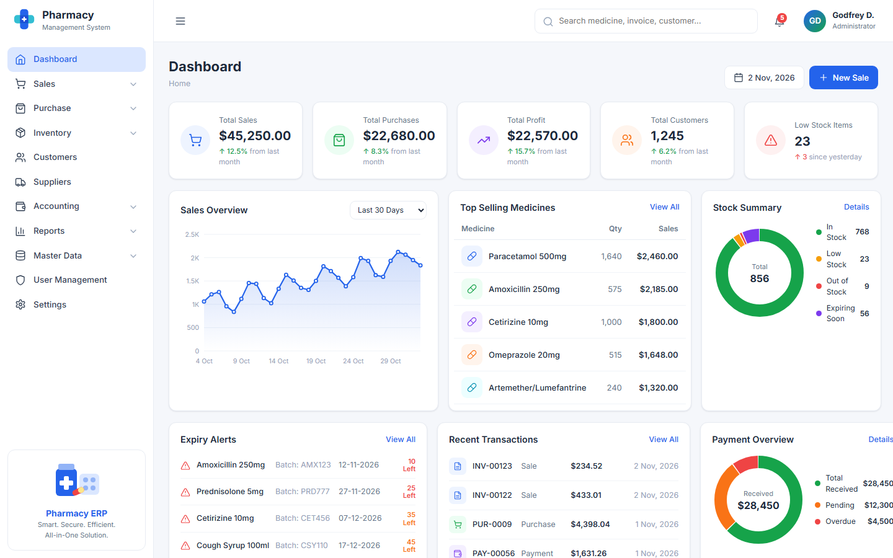
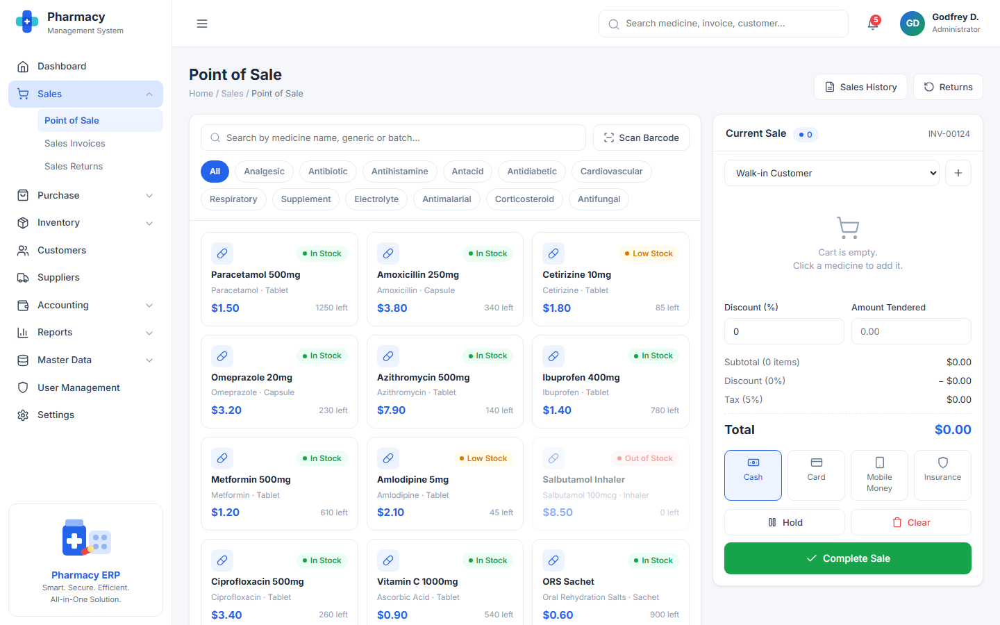

Product vision, scope, architecture and roadmap: from a single counter to a national chain.
Most small and mid-sized pharmacies still run on paper, spreadsheets or desktop software built for a single shop.
Batches aren't tracked, so medicines expire on the shelf unnoticed and are written off.
No reorder logic and no view across branches, so patients are turned away and sales are lost.
Unrecorded sales, uncontrolled discounts and cash that doesn't reconcile at shift close.
Claims are prepared by hand, are often rejected, and payment arrives weeks late.
Controlled-drug registers, prescription records and fiscal receipts are kept poorly or not at all.
Owners can't see profit, margins or branch performance until month end, if ever.
Thousands of independent pharmacy businesses on one secure cloud platform, with each pharmacy's data fully isolated.
Chains run many branches and warehouses, with stock transfers between them and combined reports.
Handles peak checkout traffic, large product catalogues and years of history without slowing down.
| Persona | Role | What they need from the system |
|---|---|---|
| Owner / Admin | Owns one or more pharmacies | Profit visibility, branch comparison, user control, audit trail |
| Pharmacist | Licensed dispenser | Fast dispensing, prescription capture, controlled-drug register |
| Cashier | Front-counter sales | Quick search, barcode scanning, mobile money, receipts |
| Store Keeper | Receives & manages stock | Goods receiving, batch & expiry entry, stock counts, transfers |
| Accountant | Manages finances | Expenses, payables & receivables, ledger, tax reports |
| Branch Manager | Runs one branch | Branch dashboard, approvals, shift reconciliation |
Owners see sales, profit, stock health, expiry alerts and payments at a glance, for one branch or all of them.
Screenshot from the clickable prototype (mock data).

A point of sale built for a busy counter, and it keeps selling when the internet drops.

Checkout, invoices, returns, shifts, offline mode
Batches, expiry, adjustments, counts, transfers
Purchase orders, goods receiving, supplier returns, recalls
Profiles, credit, insurance schemes, claims
Terms, statements, payables ageing
Expenses, payments, double-entry ledger
Sales, stock, P&L, expiry, tax; PDF/Excel export
Role-based access, branches, audit log
The counter keeps selling during internet outages and syncs safely afterwards: no lost or duplicated sales.
Every unit is tracked by batch. The earliest expiry sells first, alerts go out at 90, 60 and 30 days, and expired stock can't be sold.
Fiscal receipts issued automatically through the tax authority (e.g. TRA VFD), with a plug-in for each new country.
M-Pesa, Tigo Pesa and Airtel Money at the counter, alongside cash, card and insurance.
Copay rules, claim batches and status tracking to cut rejections and get paid faster.
Records can't be altered, controlled-drug registers are kept, and every sensitive action is logged.
Targets 12 months after launch.
| Dimension | Launch target | Designed for |
|---|---|---|
| Pharmacy businesses | 500 | 10,000 |
| Branches | 1,500 | 30,000 |
| Concurrent POS terminals | 3,000 | 50,000 |
| Sales per day | 500K | 10M |
| Products per pharmacy | 20K | 200K |
| Checkout response (p95) | < 300 ms | |
Start with one well-structured application. Split modules into separate services only when scale demands it.
A compliance checklist links each standard to requirements, tests and evidence, with automated checks every release and an annual external penetration test.
| Risk | Impact | Mitigation |
|---|---|---|
| Unreliable internet at branches | High | Offline-first POS with safe sync |
| Fiscal & regulatory rules differ by country | Medium | Plug-in country adapters; compliance review per market |
| Poor product data (duplicates, typos) | Medium | Shared drug catalogue, import validation, duplicate detection |
| Data leak between pharmacies | High | Database-enforced isolation, automated tests, penetration tests |
| Reporting load slows checkout | Medium | Read replicas and a separate analytics store |
| Staff resist change | Medium | Simple UI, Swahili localisation, onboarding & training |